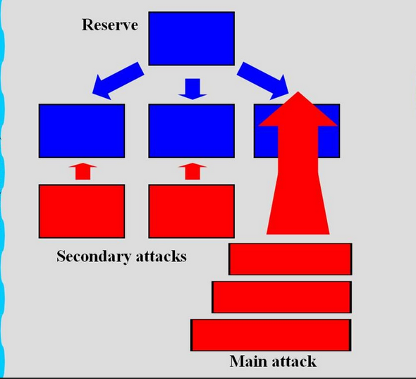

Hacks = independent or direct experieced situation which are unconventional for the given context. Some hacks are stolen and become a norm over time.
----------------------------------------------------------------------------------------------------
Hack1. I used an invisible ink for cheating on test in primary school in languages. I got 5/5. I distributed the rest of the answers to the other students who
hatted the topic as me. They got 4/5.
Hack2. During a game of Risk, I noticed a small scar on one of the bad cards, which allowed me to identify and avoid them.
However, I eventually stopped using this method as it felt unethical and diminished the enjoyment of the game.
Later, I alerted the other players when I discovered someone else exploiting the same flaw.
Hack3. While playing poker, I sometimes observed subtle leg movements under the table to gauge other players' reactions.
I learned this technique from a book. Eventually, I realized others were using the same strategy, so I began intentionally
giving misleading signals to throw them off.
Hack4. On the football match some guy tackled me, it was very rough. The agressor turned to the referee to complain about his decision as most other teams.
I spotted this, kicked the ball on his butt so that I could self-start the game and continue pressing toward the goal. I occupied a lot of field and I was broken again.
Hack4. Kemps card games is a game which is played by 4 people or two pairs. Before the game begins the
player needs to negotiate the signal of how they will recognize themselves in the case of collecting 4 kinds. People have 4 cards in their hand, they have 4
cards on the table. The goal is to collect 4 equal types of cards as quickly as possible. When you collect the 4 of the kind you need to signal this
to your partner and then he needs to say the magic word. Negotiation is done in secret. The team separated themselves to avoid
leaking the signal. I postponed the exchange of the signal between me and my partner so that the other team would get border and start
spying on us. Then I gave the obvious public signal to my partner so that the other team could catch the "wrong" signal.
During the late game, I made a "secret" signal while my partner was focused on the game so that my adversaries notice this
and make wrong commands which will make them lose.
Indirect Hack4. My team used an oblique Prussian strategy in the football match. This usually involves the movement of the players on one side of the
pitch while living me and a defender solo. I only need to drible him and I'm head to the goal alone.

Hack5. When shooting penalty kick the penalty kick taker looks at the right hand side and then he aims at the left hand side.
Hack6. At the start of a football match, teams often begin cautiously, gradually increasing their intensity.
To disrupt this rhythm, our team employed an aggressive strategy right from the kickoff, pressing the opposing team
with relentless energy. This unexpected approach caught them off guard, leaving them disorganized and unsettled.
Meanwhile, our deepest defender, with a commanding voice, stayed back as a safety net, shouting assertive instructions
to maintain our defensive structure.
Hack7. When shooting penalty kick the person you look at the right hand side and then you score at the left hand side if the goalkeeper is smart
he watches the eyes.
Hack8. When a foul occurs, the player taking the free kick can raise their hand to request the referee's intervention, prompting the opposing team to reposition.
Once the faul occur most players instinctively follow the referee's cue and move away from the free kick spot.
This often causes the goalkeeper to shift from their optimal position while organizing their defense.
The kicker can exploit this momentary lapse by targeting the area the goalkeeper has leaved.
Hack9. Game of Warewoolf. You are the troublemaker, your goal is to
catch warewoolf. You exchange two players, you keep this transaction secreat. Someone states that he is innocent, someone seems suspicious.
You say that you exchanged
Hack10. Instead of sending CVs to the company you send them website link.
Hack11. Conventional negotiation wisdom suggests anchoring your competitor by starting with a high price.
My approach was to let them evaluate my work's value, accept the lowest offer, spend a day in their office to observe,
and then decide whether to sign based on the experience.
Hack12. In Crusader Kings 3, Pope sometimes asks for help because there is a rebellion.
I assemble the army to defend Christian Faith. I remove the attackers, pope wants his state back, I cannot give him back because there
is a possibility of another rebelion.
Hack13. During a snowball fight, most participants either throw snowballs randomly or focus on building fortifications.
A clever tactic is to throw a large snowball in a high arc, drawing the opponent's attention upward.
While they are distracted watching the snowball in the air, you can quickly throw a smaller, well-aimed snowball to catch them off guard.